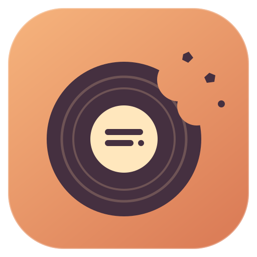

Keep the
words close.
Your music has something to say.
Songcrumb keeps a few lines in view while you do your thing.
Native macOS · Apple Silicon · No account or email needed
Right at the top.
Out of your way.
Attached beneath your menu bar, with a quiet glow on the current line. Or let it float wherever you like.
↖Click right through. Locked lyrics leave your clicks and keyboard focus with the app you’re using.
≋A few lines, just enough. Change the size, highlight and transparency. Keep it quiet or make it yours.
◒Made to settle in. Native SwiftUI and AppKit. Slower updates when idle, less work in Low Power Mode.
Your player.
A little company.
Songcrumb reads what’s playing and looks up the matching recording online. No lyric files to hunt down.
Spotify
Desktop app · macOS Automation
Native connectionApple Music
Desktop app · macOS Automation
Native connectionYouTube Music
Chrome, Edge or Brave · paired companion
ExperimentalSome songs come with a little silence. Time-synced lyrics appear when a suitable match is available from LRCLIB or your licensed provider. Plain lyrics stay clearly unsynced; missing lyrics get an honest status. Catalogue coverage and timing vary. Songcrumb doesn’t extract lyrics from your player.

A few crumbs.
All the code.
Built by Akshat Dhabi for the songs between everything else. Explore it, build it, make it your own.
More from Akshat- Open the included project.
Use
Songcrumb.xcodeprojin Xcode, choose My Mac, then Run. Or build the source folder with Apple’s Command Line Tools:./Scripts/build.sh open build/Songcrumb.app - Connect the music you use.
Enable Spotify or Apple Music in Settings and allow macOS Automation. For YouTube Music, load and pair the included browser companion.
- Let the words find you.
Online lookup is already selected. The public project URL identifies the app to LRCLIB. No personal email, account, audio recording or analytics.
This is a developer build, not a notarized one-click installer. The included README has complete setup steps, permissions and provider details.